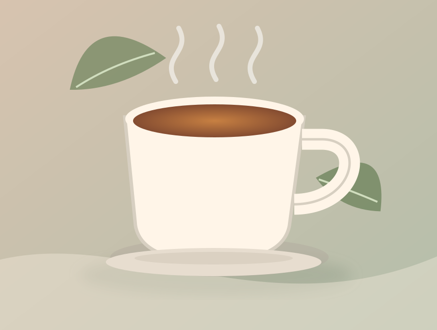

Elegí tu té
Medí entre 2 y 3 gramos de hebras por cada taza de 200 ml.
Preparar un buen té es más fácil de lo que pensás. Te compartimos algunos consejos para disfrutar al máximo cada blend.

Son orientaciones generales: cada variedad tiene su temperatura y su tiempo ideal.
Medí entre 2 y 3 gramos de hebras por cada taza de 200 ml.
Para té verde usá unos 75–85 °C; para té negro, 90–95 °C.
Esperá de 2 a 3 minutos para té verde o de 3 a 5 para té negro.
Retirá las hebras y tomá tu té solo, con leche o como más te guste.
Usá agua fresca, evitá hervir repetidas veces y respetá los tiempos de infusión para descubrir cada aroma sin amargor.
ELEGÍ TU PRÓXIMO BLEND →
Conocé nuestras variedades y encontrá tu favorita.